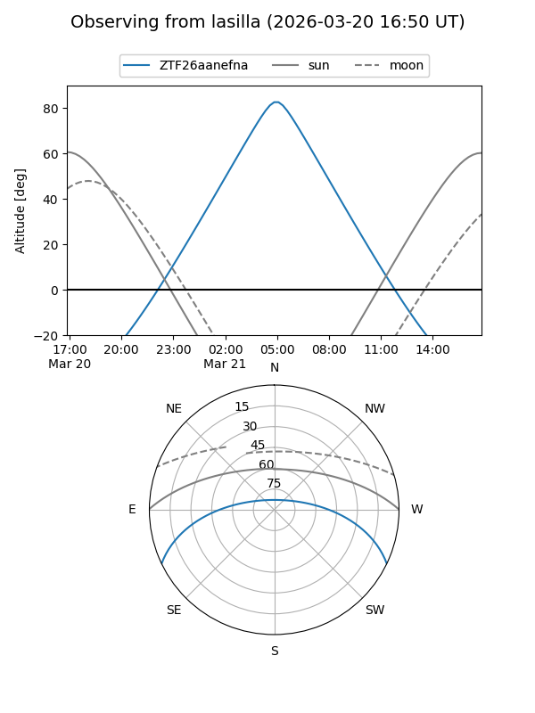
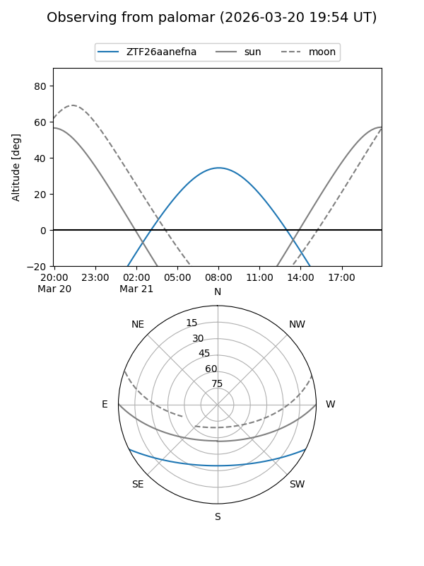

ZTF26aanefna
Target ZTF26aanefna at 2026-03-21 09:21
Aliases and brokers:
FINK: link
Lasair: link
ALeRCE: link
alt names
ZTF26aanefna (ztf,fink_ztf)
Coordinates:
equatorial (ra, dec) = 182.0710,-21.98312
equatorial (HMS+DMS) = 12:08:17.05,-21:58:59.23
galactic (l, b) = (289.8762,+39.79211)
Flags:
Photometry:
last ztfg=19.97
1 ztfg detections
Lightcurve
Visibility


Additional plots